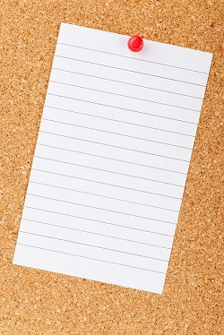

철부지 자취생의 세상 사는 이야기
블로그 설정 방문자 통계 카테고리 편집 댓글 관리 이웃 블로그독자를 위한 출판사

컴퓨터 기술서
전문 경제서
대학 교제
호돌이표 도시락
영양 만점
김치 제공
양은 냄비에 물 600ml를 붓고 팔팔 끓이다가 미리 준비해둔 라면을 퐁당 투척한다. 면이 불을 대 쯤에 스프를 탈탈 털어 넣는다. 냉장고를 열어 보고 계란이 있으면 깨서 넣고 휘휘 저어 준다. 다 익었으면 김치랑 같이 후루룩 후루룩 먹는다. 다 먹고도 배가 안 부르면 밥을 말아 먹으면 든든하다. 배가 부르면 잔다.
10월 어느날 보령 오천항에서 친구 녀석과 새벅 5시에 낚시배에 올랐다. 배멀미에 시달려가며 1시간 항해 후 열심히 던지고 감기를 반복하다 난생 처음으로 낚시로 뭔가를 잡아보았다.

제원 - CPU:제타노스 16코어 64비트 2.8GHz, 메모리 : 32G, 저장장치 : K플래시 4테라, LCD : 4.8인치 슈퍼 울트라 캡숑 브라이트 플랙서블 아몰레드 초고해상도 3840 * 2400, 배터리 : 무선 충전 골드 폴리머 9600mA(대기시간 24일), 카메라 : 20M 픽셀 10X 광학 이너줌, 5W 스테레오 외부 스피커, 빔 영상 출력, 윈도우 에뮬레이터 내장.